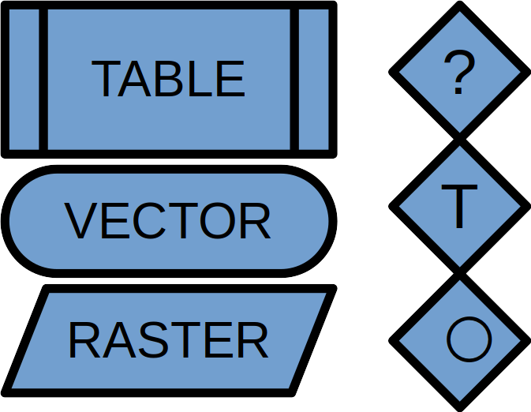

Data Handling
Created Monday 21 February 2022
@GEOGRAPHY @YEAR3 @GEOINFORMATICS
@Data_handling is about separating data to find matches and answer a question.
For example, where is the highest tree in land use of forest?
Data Handling Classes
There are three classes:
@Query
@Transformation
@Alter_operations
| Symbol | Code | Class |
|---|---|---|
| ? | Fq | Query |
| ⃝ | Fa | Alter operations |
| T | Ft | Alter operations |
All new datasets are based on the handling of other datasets
| Class | Changes | Doesn't Change | Example |
|---|---|---|---|
| Query | Selects a subset of the dataset based on multiple criteria but doesn't change it. | Any original data or data structure | Find trees within a certain distance |
| Transformation | Georeference or data structure | Thematic data | Change the projection or change from vector to raster |
| Alter | Thematic and geometric data | Georeference and data structure | Anything that makes a query and then makes a new dataset from it, ike calculating the shade zone of a skyscraper. |
@vector_graphics @raster
Queries
Queries can have one or many criteria:
- From a land use dataset, find all areas of forest
- Find all areas that are forest AND have a particular soil type.
Queries can be:
@Spatial_queries : select anything in a specific area, or select based on topology (do these roads intersect?)
@Thematic_queries : select based on whether attributes are true/ false @booleans
@Raster_queries : select based on cell value⬇️
Queries can be queried through @SQL where you ask the following things:
- Select: select an attribute
- From: which table to select from?
- Where: where condition is true
Select ID from Soils where Clay <60
Logic gates
@Logic_gates
| Gate | Returns true if |
|---|---|
| And | Both sides are true |
| Or | At least one side is true |
| Xor | Exactly one side is true, but not both |
| Nor | Both sides are false |
| Nand | At least one side is false |
| Not | Operand is false |
For @Raster_queries each operator has a symbol:
| Symbol | Operator |
|---|---|
| + | Add |
| - | Subtract |
| * | Multiply |
| / | Divide |
| = | Equals |
| == | Equals? |
| != | Not equal |
| > | Greater than |
| < | Less than |
| <= | Less than or equal |
| >= | Greater than or equal |
| & | And |
| | | Or |
| ^ | Xor |
| ~ | Not |
Data Action Models
@Data_action_models are essentially a flowchart of methodology: how you get from your input data to output data.
